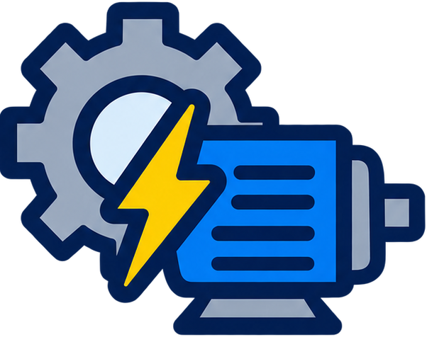

Matemática ciclo superior
4 h semanales · 144 h anuales
Números reales y complejos, sucesiones, funciones polinómicas, exponenciales, logarítmicas y trigonométricas.

Formación para proyectar, montar, operar, instalar y mantener equipos e instalaciones mecánicas, eléctricas, electromecánicas, neumáticas y oleohidráulicas, incluyendo automatización, control industrial y ensayos.
El título de referencia es Técnico en Equipos e instalaciones electromecánicas, dentro del sector electromecánico y la familia profesional de Electromecánica. El técnico está capacitado para proyectar equipos e instalaciones mecánicas, electromecánicas, neumáticas y oleohidráulicas, circuitos eléctricos y de control de automatismos; realizar ensayos de materiales y ensayos eléctricos, mecánicos y electromecánicos; operar equipos, instalaciones y máquinas herramienta; y realizar el mantenimiento de componentes, equipos e instalaciones.
Puede desempeñarse en los ámbitos de producción, laboratorios, mantenimiento, desarrollo, gestión y comercialización, en relación de dependencia o de forma independiente. Su trabajo siempre atiende a los criterios de seguridad, impacto ambiental, relaciones humanas, calidad y productividad.
El plan combina materias científico-tecnológicas (Matemática, Física, Química) con formación técnica específica: materiales, dibujo técnico y CAD, máquinas eléctricas, mecanizado y metrología, montaje y suministro de energía, termodinámica, automatización, control industrial, seguridad e higiene. Se cursa de 4.º a 7.º año y culmina con las Prácticas Profesionalizantes del Sector Electromecánico (216 horas anuales).
4 h semanales · 144 h anuales
Números reales y complejos, sucesiones, funciones polinómicas, exponenciales, logarítmicas y trigonométricas.
3 h semanales · 108 h anuales
Cuantificación de magnitudes, vectores y tensiones, energía, calor y electricidad.
2 h semanales · 72 h anuales
Estructura atómica, uniones químicas, estequiometría, soluciones y procesos industriales.
2 h semanales · 72 h anuales
Clases de materiales, metales ferrosos y no ferrosos, propiedades y estructura metalográfica.
2 h semanales · 72 h anuales
CAD: principios básicos, planos, perspectivas, isométricas y representación en 3D.
4 h semanales · 144 h anuales
Ley de Ohm, potencia, magnetismo, inducción y construcción de un transformador.
4 h semanales · 144 h anuales
Metrología, trazado y control dimensional, medición de longitudes, ángulos y tolerancias.
4 h semanales · 144 h anuales
Instalaciones eléctricas de baja tensión: generación, distribución y circuitos en viviendas.
4 h semanales · 144 h anuales
Límites, continuidad, derivadas, máximos y mínimos, e integrales.
3 h semanales · 108 h anuales
Cinemática y dinámica del punto material, velocidad, aceleración y movimiento.
3 h semanales · 108 h anuales
Leyes de Kirchhoff, resistencias en serie y paralelo, trabajo y capacidad eléctrica.
3 h semanales · 108 h anuales
Estática, vínculos, grados de libertad, reacciones y baricentro de figuras planas.
4 h semanales · 144 h anuales
Ensayos de máquinas de corriente continua y alterna, control de velocidad y par motor.
4 h semanales · 144 h anuales
Mecanizado con máquinas herramienta convencionales, tratamientos térmicos y metrología.
4 h semanales · 144 h anuales
Neumática: generación, acondicionamiento y distribución de aire comprimido.
2 h semanales · 72 h anuales
Funciones vectoriales, límites y derivadas parciales, transformadas y probabilidad.
3 h semanales · 108 h anuales
Temperatura, leyes de los gases, sistemas termodinámicos y máquinas térmicas.
3 h semanales · 108 h anuales
Corriente alterna, impedancia, desfasaje, circuitos R-L-C y potencia.
3 h semanales · 108 h anuales
Tensiones y deformaciones, fatiga, dimensionado de vigas a flexión y cálculo de ejes.
2 h semanales · 72 h anuales
Derechos y obligaciones de trabajadores y empleadores, remuneraciones, aportes y ART.
2 h semanales · 72 h anuales
Sistema internacional de medidas, errores en mediciones e instrumentos analógicos y digitales.
4 h semanales · 144 h anuales
Controladores lógicos programables, automatización por contactores, reguladores de velocidad y sensores.
4 h semanales · 144 h anuales
Diseño 3D, interpretación de planos y mecanizado asistido por computadora (CNC).
4 h semanales · 144 h anuales
Suministros en baja tensión, cámara de transformación, líneas de 13,2 kV y subestaciones.
2 h semanales · 72 h anuales
Teorías del emprendedorismo, finanzas, marketing y planificación de emprendimientos.
2 h semanales · 72 h anuales
Lazo abierto y cerrado, electrónica digital, PLC, sensores y motores paso a paso.
2 h semanales · 72 h anuales
Condiciones de higiene, tratamiento de efluentes, ventilación, iluminación y ruido.
3 h semanales · 108 h anuales
Transformadores monofásicos y trifásicos, máquinas rotativas y polifásicas de inducción.
3 h semanales · 108 h anuales
Diagramas de proceso, balance de materiales, calderas, turbinas, refrigeración y recipientes a presión.
2 h semanales · 72 h anuales
Normas IRAM-ISO, gestión de la calidad, metrología industrial y legal.
4 h semanales · 144 h anuales
Mantenimiento predictivo (ultrasonido, vibraciones, balanceo), análisis de fallas y elementos de máquinas.
4 h semanales · 144 h anuales
Diseño de procesos e instalaciones productivas, series y lotes, costos y tiempos.
4 h semanales · 144 h anuales
Cálculo de instalaciones domiciliarias e industriales, luminotecnia y grupos electrógenos.
216 h anuales
Consolidar e integrar las capacidades del perfil en situaciones de trabajo reales.
Diseñar sistemas mecánicos, eléctricos, electromecánicos, neumáticos, oleohidráulicos y de control, herramientas y dispositivos, con cálculo de costos y normativa vigente.
Poner en marcha, controlar y detener equipos, instalaciones y sistemas de control de producción, edificios e infraestructura urbana, y operar máquinas herramienta.
Armar y ensamblar dispositivos, mecanismos, máquinas y equipos mecánicos, eléctricos, neumáticos y oleohidráulicos, siguiendo la documentación técnica y las normas de seguridad.
Realizar instalaciones eléctricas de baja y media tensión, de iluminación y de control de automatismos, líneas de transporte y distribución de energía, y sus pruebas funcionales.
Planificar y ejecutar el mantenimiento preventivo, predictivo y correctivo, diagnosticar averías y reparar equipos para garantizar la continuidad de los procesos productivos.
Programar sistemas automáticos según sus parámetros de funcionamiento, ajustando y calibrando sensores para asegurar su cumplimiento.
Realizar e interpretar ensayos de materiales y de componentes, equipos e instalaciones mecánicas, eléctricas y electromecánicas, y participar en peritajes, tasaciones y certificaciones.
Participar en la gestión de la producción, seleccionar y asesorar sobre equipamiento, y comercializar o dar asistencia técnica, venta y posventa.
Las habilitaciones de los puntos 1 a 4 y 6 se refieren a fábricas, talleres, industrias, edificios comerciales e infraestructura urbana o rural, y tienen límites técnicos definidos en el diseño curricular (por ejemplo, un rango de temperatura de −25 °C a 200 °C).
El técnico se desempeña en empresas de distinta envergadura, en servicios de proyecto, montaje o mantenimiento, y en el suministro de servicios auxiliares como energía eléctrica, vapor, agua, aire comprimido, gas y gases industriales. También puede generar y gestionar, de forma autónoma o con otros profesionales, emprendimientos productivos o de servicios.
En 7.º año, las Prácticas Profesionalizantes del Sector Electromecánico tienen una carga de 216 horas anuales. Permiten consolidar e integrar las capacidades del perfil en situaciones de trabajo reales, dentro de la escuela (proyectos de prácticas, proyectos tecnológicos, Módulos Integradores de 7.º año) o fuera de ella (trabajos por cuenta de terceros).
Los entornos formativos son el Laboratorio de Diseño, el Laboratorio de Mediciones Eléctricas, el Laboratorio de Automatización y Robótica, el Laboratorio de Máquinas Eléctricas, el Taller de Mecanizado y CNC, el Laboratorio de Metrología y Control de Calidad, el Laboratorio de Ensayos Industriales y el Taller General.
Conocé el proceso de pre-inscripción y empezá el camino técnico en la E.E.S.T. N.º 5.